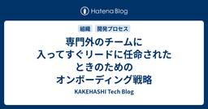

KAKEHASHI Tech Blog
https://kakehashi-dev.hatenablog.com/
カケハシのEngineer Teamによるブログです。
フィード

専門外のチームに入ってすぐリードに任命されたときのためのオンボーディング戦略 29
29
KAKEHASHI Tech Blog
カケハシの認証権限管理基盤チーム所属の萬治です。4月中旬に入社し、5月から kosuiさんと共同でテックリードをしています。入社エントリを書きます。 あなたは、入社して2週間でリードに任命された人を見たことはありますか？ それも、全くの専門外の領域で。 テックリードを拝命して2ヶ月半 (執筆時点)、どのように振る舞いどんな意識で仕事をしてきたかと、新人をオンボーディングしやすい環境について話そうと思います。 何もかも専門ではなかったところからのスタート 僕は実はカケハシの選考応募時点では認証権限管理基盤チームに応募していたわけではありません。Platform領域を志望してはいたものの、最初に応…
2日前

1週間スプリントと3つの開発レーンで回すローカルアプリ基盤チームのコミュニケーション
KAKEHASHI Tech Blog
こんにちは。ローカルアプリ基盤チームの岩佐（孝浩）です。 カケハシには「岩佐」さんが複数名在籍しており、社内では「わささん」と呼ばれています。 私たちのチームは、薬局現場で使われる薬局店舗の端末上で動くアプリの基盤を開発・運用しています。発足してまだ間もないチームですが、さまざまなアプリの開発を計画しています。 今回は、チームの仕事内容と、どのようにコミュニケーションをとっているかを紹介します。「基盤開発って具体的に何をしているの？」「どんなチームの雰囲気なの？」と気になっている方に、少しでもイメージを持っていただけたら嬉しいです。 私たちが担う仕事 ローカルアプリ基盤チームのミッションは、薬…
9日前
複数プロダクトを支えるサーバーサイドTS研究会の1年と実践知
KAKEHASHI Tech Blog
こんにちは。生成AI研究開発チームのainoyaです。 カケハシでは、チームを横断して特定の技術テーマについて知見を深め合う「研究会」という活動があります。サーバーサイドTS研究会はそのひとつです。バックエンドで TypeScript を使っているメンバーや、サーバーサイド TypeScript（以下、サーバーサイドTS）に関心のあるメンバーが集まり、設計・実装・エコシステムの話をしています。 この記事では、サーバーサイドTS研究会がこの1年でどのような活動をしてきたのかを、運営メンバーの視点から振り返ります。 サーバーサイドTS研究会とは この1年の主な活動 ガイドラインから「使える」スキル…
11日前
個人情報保護士の受験をきっかけにデータサイエンティストが手に入れた汎用的な学び
KAKEHASHI Tech Blog
はじめに こんにちは、データサイエンティストの保坂です。 6月21日に、自己研鑽として第83回個人情報保護士認定試験を受験してきました。 勉強した内容自体もそうですが、それ以外にも今後に活かせる大きな学びがあり、受験してみてとても良かったです。 この記事では、なぜそう感じたのかを書いていきたいと思います。 個人情報保護士認定試験とは 個人情報保護士認定試験は、一般財団法人 全日本情報学習振興協会が主催する認定資格です。弁護士や税理士のような「士業」ではなく、個人情報保護に関する知識を一定水準以上持っていることを認定するための民間資格です。とはいえすでに累計約6万人の合格者を輩出しており、大変人…
15日前
共通基盤の構築にサーバサイドTypeScriptを選んで嬉しかったこと
KAKEHASHI Tech Blog
自分のブログに書いた前編「サーバサイドTypeScriptを選ぶ前に向き合ってほしいこと」では、サーバサイドTypeScriptを選ぶ上で、TypeScriptの言語特性や実行環境の得意・不得意と向き合うことの重要性について書きました。この記事では、その続きとして認証基盤・ID基盤という具体的な領域でサーバサイドTypeScriptを選んだことで実際に嬉しかったことを共有します。 ただし、ここに書くことは「だからサーバサイドTypeScriptを選ぶべきだ」という主張ではありません。私たちの領域と組織の文脈において嬉しかったことを、できるだけ正直に共有するものです。 なお、本稿では認証基盤やI…
17日前
セマンティックレイヤーに身構えない、意味を書くだけで始められるデータ整備
KAKEHASHI Tech Blog
カケハシで Analytics Engineer をしている柳です。 「セマンティックレイヤー」「オントロジー」「ナレッジグラフ」「ヘッドレス BI」「GraphRAG」等々、データを AI に活かそうとして調べ始めると、こうした言葉が次々に目に入ってきます。どれも「データの意味をうまく扱う」ための概念らしい、というところまでは分かる。けれど、では自分は何をどこまで作ればいいのか悩んでしまうことがあるように感じます（私自身もそうです）。 この記事は、その問いに私がいまどう向き合っているか、現時点での整理です。先に結論を書いておくと、大掛かりな仕組みを構える前に「データの意味を書いて、人と AI…
23日前
4レーン体制への移行とチームの結びつきを強めるオフサイトの全記録
KAKEHASHI Tech Blog
はじめに こんにちは、患者さんと薬局をつなぐコミュニケーションプラットフォームであるPocket Musubi の開発ディレクターをしている松本です。 開発チームが大きくなるとき、必ずぶつかる問いがあります。「チームの生産性をどう高め、保ち続けるか」、そして「そのために最適な組織はどうあるべきか」。 Pocket Musubi の開発チームは、この8ヶ月でメンバーが19名から23名に増え、開発レーンを1つから4つに増やしました。この記事では、その体制変更とセットで設計した全員参加オフサイトについて書きます。 なぜレーンを分けたのか 8ヶ月前、私たちは機能開発1レーン＋SREという体制でした。当…
1ヶ月前
FastAPIユーザーから見たRobynのポテンシャルとパフォーマンス検証
KAKEHASHI Tech Blog
はじめに Musubi 開発チームおよびサーバサイド Python 研究会の加藤です。 サーバサイド Python 研究会では、カケハシ社内にいる Python バックエンド開発者と、Python に興味がある人たちが集まってワイワイやっています。 今回は、研究会の中で話題に出た Robyn Framework について調べてみました。 Robyn Framework ってなに？ Robyn Framework（以下 Robyn）は Sparckles が開発する Web アプリケーションフレームワークです。 公式サイトのトップには "A Fast, Innovator Friendly, a…
1ヶ月前
設計の現場から「Python で依存と結合に向き合う」
KAKEHASHI Tech Blog
おはようございます。カケハシのPE事業に関する開発チームでソフトウェアエンジニアをやっているogijunです。 PE（Patient Engagement）事業は、患者さん自身が自分の治療や健康維持に前向きに関わっていけるよう支援する事業で、電子薬歴『Musubi』や服薬フォローアプリ『Pocket Musubi』に新たな機能を届けています。 今回は、私たちが事業を通じて開発中に実際に遭遇した課題を題材に、ふだん設計時にどういう判断をしながら実装を進めているのか？というのを紹介します。 具体的にはこういう要件でした。とあるサービスで、サービス横断でアンケート等に使われているフォーム送信基盤があ…
1ヶ月前
自社開発のスクラムで一度捨てたはずのWBSに救われた
KAKEHASHI Tech Blog
こんにちは。Musubi機能開発チームでエンジニアをしている古川です。 「古臭いSIerより、エンジニアファーストで柔軟に進められる自社開発のほうがいい！」……そう意気込んで会社を飛び出した経験、身に覚えのある人もいるのではないでしょうか。私もそのひとりでした。でも今になって振り返ると、SIer時代の案件だって普通に高度なことに取り組んでいました。自社開発に夢を見ていた当時の自分には、それを理解できるはずもなかったのですが。 この記事は、そんな「過去を置いてきたつもり」だった私が、自社サービスのスクラム開発の只中で、よりによってもう二度と触ることはないと思っていたWBS（Work Breakd…
1ヶ月前
AI に FigJam の付箋レイアウトを正しく読み解かせるための工夫
KAKEHASHI Tech Blog
はじめに こんにちは、Musubi 機能開発チームの西村です。 湿度が高くなり、夏が近づいてきたと感じています。皆様いかがお過ごしでしょうか？ こちらのエントリでは、Musubi 開発が抱えていたボトルネックを AI フレンドリーにしてみたという内容をお届けします。 FigJam & Jira リファインメントの認知負荷 Musubi 機能開発チームでは、スプリントのリファインメントに FigJam（Figma 社のオンラインホワイトボード）と Jira を活用しています。 付箋をその場で追加・移動しながら議論でき、会議の流れをキャンバスにそのまま残せる点が気に入っています。 本記事用に作成し…
2ヶ月前
PdM もデザイナーも AI でプロトタイプを作る — フロントエンドエンジニアが整えた3つの準備
KAKEHASHI Tech Blog
ランキング参加中プログラミング こんにちは。フロントエンドエンジニアをしているNokogiri（@nkgrnkgr）です。 はじめに カケハシのある新規プロダクト開発で、PdM やデザイナーが AI を使って実コードベースでプロトタイピングをするようになりました。進め方としてはわりと大きな変化です。 もちろん会社として全職種に対して AI の利用を推奨している背景もあり、PdM やデザイナー自身も AI を使うことには前向きでした。そのうえで、実際にプロトタイピングを始めるまでのハードルを越えるところを、フロントエンドエンジニアとしてサポートしたいという思いがありました。 その背景の一つに、新…
2ヶ月前
カケハシを支える開発チームの今と次なる課題 〜ベテラン&社歴半年メンバーで本音の座談会〜
KAKEHASHI Tech Blog
KAKEHASHI Tech Encounterは、カケハシの開発組織やプロダクトづくりの裏側にある、社内のリアルな熱量を外部に伝えるために開催している技術イベントです。 第6回となる今回は、入社半年のSRE・森藤の「次回のイベント、自分めちゃくちゃいい話できる気がするんです！」という一言をきっかけに企画しました。 テーマは「カケハシを支える開発チームの今と次なる課題」。転職時に考えた人生の目的、入社半年で見えたカケハシの開発組織の現在地、そしてチームをまたいだ次の課題について、理想論ではなく、登壇者自身の言葉で語る回となりました。当日は、前半を森藤によるセッション、後半を森藤・大山・竹本の3…
2ヶ月前
Go の context.Cancel パターンを TypeScript に持ち込んでリソースリークと決別した話
KAKEHASHI Tech Blog
こんにちは、ソフトウェアエンジニアの沖（@takuoki）です。 私たちのチームでは、バックエンドを TypeScript で開発しており、Web フレームワークには Hono、メッセージキューには NATS を使っています。その中で、Server-Sent Events（SSE）を使ったリアルタイム通知の仕組みを実装する機会がありました。 SSE のような長寿命の接続では、クライアントの切断・タイムアウト・サーバー側のエラーなど、さまざまな理由で接続が終了します。このとき、NATS サブスクリプションやタイマーを確実にクリーンアップしないと、リソースリークが発生します。実際、最初にプロトタイ…
2ヶ月前
ETL 変換処理の設計原則 — PySpark を例に
KAKEHASHI Tech Blog
ETL の変換 (Transformation) 層は、Source のデータを変換して Sink に出力する場所です。SQL で書くこともできますが、テストや再利用性の観点を踏まえると、小さい関数を組み、それらを組み合わせるやり方に行き着きます。 本記事では、変換層を堅牢に組むための 4 つの設計原則を扱います。 純粋関数として書く パイプラインを組む Sink ごとにモジュール化する スキーマで型情報を補う 例示には PySpark の DataFrame API を使いますが、これら 4 つの原則は ETL の変換層に共通する考え方で、Polars / Pandas など他のツールでも同…
2ヶ月前
Web Locks API でロック待ちを「しない」選択 — 複数タブにおけるトークン更新競合の解消
KAKEHASHI Tech Blog
こんにちは。カケハシでAI在庫管理の開発をしている江藤です。 AI在庫管理では、複数タブを開いた状態で使われることがあります。認証周りを再実装する中で、複数タブを開いていると発生するアクセストークンの自動更新の重複問題に向き合うことになりました。今回はその問題をWeb Locks APIで解決した実装の変遷を紹介します。 アクセストークン自動更新時の重複 AI在庫管理はSPAで動いているため、アクセストークンの有効期限が切れてしまう数分前に自動でトークンの更新処理を行なっています。 ユーザーが開いているタブが1つだけなら単純に更新リクエストを行うだけで済むのですが、複数タブを開いている場合に少…
2ヶ月前
RenovateのlockFileMaintenanceを利用して間接依存までもれなく更新する
KAKEHASHI Tech Blog
RenovateのlockFileMaintenanceの利用シーン Renovateを導入してパッケージを更新しても、GitHubの脆弱性検知数が減少しないことがあります。これは、リポジトリの脆弱性検知が間接的にインストールされるパッケージも対象とする一方で、デフォルトのRenovateの挙動では間接依存のパッケージを対象にしないためです。この記事ではRenovateで間接依存パッケージ更新も行うオプションを紹介します。 lockFileMaintenanceの説明 RenovateにはlockFileMaintenanceという一見わかりづらい機能があります。ドキュメントには以下の説明があ…
2ヶ月前
git worktree × PR 一覧確認・一括掃除・Claude Code 自動起動を 1 コマンドにした CLI ccw を開発した
KAKEHASHI Tech Blog
はじめに こんにちは。 電子薬歴 Musubi の基盤開発チームで SRE を担当している大山です。 今回は、Claude Code で増えていく git worktree を PR 情報つきの一覧・選択・起動・後片付け までまとめて扱える個人 OSS の CLI ccw を紹介します。claude --worktree と git worktree を薄くラップしているだけのツールです。 普段の開発では Claude Code をメインに使っているのですが、単一のリポジトリで複数の作業を並行して進める となると、気づけば worktree が溜まって、どれが何の作業だったか迷子になったり、ま…
3ヶ月前
公式ドキュメントがないJSON仕様をAIに教え込み、Databricksダッシュボードの生成と編集を自動化するスキルの設計と実装
KAKEHASHI Tech Blog
こんにちは、ソフトウェアエンジニアのkackyです。 私たちのチームでは、AIコーディングアシスタント（Claude Code / Cursor）の「スキル」という仕組みを使い、自然言語でDatabricksのダッシュボードを生成できる環境を構築しました。「○○の推移を可視化してみたい」と指示するだけで、ダッシュボードのたたき台が数分で出来上がる世界です。 しかし、その裏側では「公式に仕様が公開されていないJSON形式を、いかにしてAIに正しく生成させるか」という地味で泥臭い作業がありました。この記事では、その設計判断とノウハウを共有します。 背景：Databricksダッシュボードの課題 私…
3ヶ月前
医療 × AI/データの「総合格闘技」が始まる——カケハシ「VP of Data & AI」新設の理由
KAKEHASHI Tech Blog
VP of Data and AI 鳥越 2026年3月2日、カケハシは執行役員 VP of Data & AIに鳥越大輔の就任を発表しました。 この人事の背景には、医療×AI・データという難易度の高い課題に向き合っていくことへの覚悟があります。今回、鳥越と執行役員CTOの湯前慶大に、執行役員 VP of Data & AIの人選理由から、カケハシにおけるAI・データ活用の現在地、そして今後の挑戦まで聞いてきました。 医療× AI・データという課題に挑むための執行役員就任 執行役員CTO 湯前 ──── なぜ今、カケハシに「VP of Data & AI」という役割が必要だったのでしょうか。 …
3ヶ月前
生成AI時代にこそ効く、インタラクティブなコード検索の設定Tips
KAKEHASHI Tech Blog
はじめに こんにちは、カケハシの認証・権限管理基盤チームで開発をしている金子です。 最近は生成AIの性能向上により、生成AIを活用できるシーンは日々拡大しています。コーディング以外にも、新しい機能の設計や要求分析、バグ発生時のトラブルシューティングなど、本当に多くのシーンで生成AIは力を発揮します。 既存コードの調査も同様に生成AIツールが活躍しますが、時には生成AIの確率的な要素を含んだ結果ではなく、「確実に漏れなく」検索したいという場面もあります。 インタラクティブな検索ツール 本記事で紹介するツールを使用すれば、検索結果の確認と検索クエリの変更を高速に繰り返すことで、細かな表記揺れなども…
3ヶ月前
AIは「正解」を知っているが「作法」は経験者に学んだ。Webエンジニアが挑んだWindowsアプリ開発
KAKEHASHI Tech Blog
こんにちは。ソフトウェアエンジニアとして、カケハシの新規プロダクトの開発をしている鳥海です。 カケハシでは、組織横断で特定のテーマについて知見を深め合う「研究会」という取り組みがあります。 今回は、その中の AI 活用研究会からの発信です。 今回のテーマは、未経験領域である Windows アプリ開発において、AI を活用しながら立ち上げの初速を出しつつ、Web フロントエンド開発との文化の違いを吸収し、経験者との共創を通じて価値を作っていく方法です。 実際に取り組んだ内容をもとに、うまく進んだことだけでなく、失敗しかけた場面やそのときに感じていたことも含めて、背景や課題感、どのように考えて進…
3ヶ月前
Claude Code スキル機能を活用した開発環境構築の自動化と運用
KAKEHASHI Tech Blog
はじめに こんにちは、カケハシで Pocket Musubi というサービスの開発をしている宮里です。 Pocket Musubi は多数のリポジトリで構成されており、開発環境の構築は毎回それなりの時間がかかる作業でした。今回、その中でも主要な3リポジトリの環境構築を、Claude Code の「スキル」機能を使って自動化してみました。 本記事では、スキルの設計や工夫、使ってみた感想を紹介します。 環境構築がつらい Pocket Musubi の主要コンポーネントは、バックエンドAPI（Django / Docker Compose）、薬局管理画面（Next.js）、患者向けLIFFアプリ（N…
3ヶ月前
医療ドメインの「表記ゆれ」をどう解くか？カケハシのNLP2026ポスター発表と展示ブースの様子をお届けします
KAKEHASHI Tech Blog
はじめに こんにちは、カケハシでデータサイエンティストをしている川邊です。 2026年3月9日〜13日に栃木県宇都宮市のライトキューブ宇都宮で開催された、言語処理学会第32回年次大会（NLP2026）に参加してきました。 カケハシはプラチナスポンサーとして協賛し、スポンサーブースの出展に加え、ポスター発表も行いました。本記事では、発表内容の紹介や学会の様子、気になった発表についてレポートします。 NLP2026について 言語処理学会年次大会は、自然言語処理（NLP）に関する国内最大級の学術会議です。今年は参加者約2,300名超、発表797件と、いずれも歴代最多の規模での開催となりました。 今年…
3ヶ月前
ゼロから始めた Musubi インフラ IaC 化の軌跡 — 課題解決と工夫の記録
KAKEHASHI Tech Blog
はじめに 対象となる読者 IaC 化を決めた背景 🏗️ 困ったこと & カウンター 課題.1 リソースの管掌範囲が明文化されていない 🤯 カウンター ✅ 課題.2 IaC ツールが乱立していた 🤯 カウンター ✅ 課題.3 デプロイ元のリポジトリが体系化されていない 🤯 課題.4 Serverless Framework の有償化 🤯 工夫したポイント 💡 Terraform ディレクトリ構成 📂 CI/CD パイプラインの並列化 ⚡ セキュリティの担保: OIDC 認証で IAM User を撲滅 🔐 drift 検出: 手動変更を見逃さない 🔍 PR のライフサイクル 🔄 Devin によ…
4ヶ月前
Claude Codeに社内の情報を集約させたら、要求分析の立ち上げがスムーズに回り始めた
KAKEHASHI Tech Blog
こんにちは、認証・権限管理基盤チームの五十嵐です。 直近のプロジェクトで、Claude Codeに既存のコードベース・Slack・社内ドキュメント（Confluence）を読み込ませ、要求分析の叩き台を生成するという取り組みを行いました。 今回はその具体的な進め方と結果を共有します！ 背景と課題 私が所属していたチームは2026年01月に認証・権限基盤チームに統合となり、統合先のメンバーと一緒に働くことになりました。 直近の新しいプロジェクトで、エンジニア主導で要求分析を行おうと試みましたが下記のような課題がありました。 メンバー全員が既存システムに詳しいわけではない 既存システムの業務知識が…
4ヶ月前
「OSSとコミュニティ」〜OSS貢献は目的ではない？Hono作者yusukebe氏が語る熱狂の源泉と「ワクワク」の力〜
KAKEHASHI Tech Blog
カケハシでの社内講演に、Honoの作者であり、現在はCloudflareでデベロッパーアドボケイトを務める和田裕介氏（@yusukebe）をお招きしました。 テーマは「OSSとコミュニティ」。一個人の原体験から始まり、いかにしてHonoが世界的なコミュニティへと成長したのか。その裏側にある「来るもの拒まず」の挑戦や、泥臭い葛藤についてお話しいただきました。 社内向けのクローズドな場でしたが、圧倒的な熱量と「エンジニアとしての生き様」に触れる濃密な時間だったため、ご本人の許可を得て特別に公開します。当日は、前半を講演編、後半を対談編として構成し、対談パートにはカケハシのVPoTである椎葉(@bu…
4ヶ月前
サーバーサイドTypeScriptの型システムをどう教えるか — 他言語経験者に向けたオンボーディング事例
KAKEHASHI Tech Blog
こんにちは、kosuiこと岩佐幸翠 (@kosui_me) です。カケハシで認証権限基盤チームのテックリードを務めています。 私たちのチームでは、認証基盤・ID基盤・端末基盤・ライセンス基盤など、様々なプラットフォームシステムをTypeScriptで構築しています。 サーバサイドTypeScriptをビジネスとして実践する場合、動的型付けのPythonやPerl、クラスベースの名目的型付けのJavaやC#、パターンマッチ中心のElixirなど、型に対するアプローチが異なる言語の経験者が、様々なバックグラウンドを持ったチームメンバーとして開発・運用することとなります。しかし、それぞれのバックグラ…
4ヶ月前
「誰かがやるだろう」をやめた1年間の記録
KAKEHASHI Tech Blog
はじめに 今年は変化した一年だったなぁ。一番の変化というと個人の課題からチームの課題へと視座感が変わったところで、それまでは個人のスキルアップが目標のほとんどだったけど、チーム状況の変化を目の当たりにして今のままだとダメだなと感じ、チームの課題を自分の課題と思って取り組めるようになったのが大きな変化だった。 それによって主体的に動き・提案したり既存フローを変えたりして、これまでマネージャー層が現場の意見を聞きながら少しずつ調整かけていたものを現場の目線でいい感じに変えられるようになったし、実際手応えも感じることができた（あとは、変化したやり方がまだ浸透しきっていない感じはするので、文化として当…
4ヶ月前
React Compiler導入で得られた効果と気をつけたいポイント
KAKEHASHI Tech Blog
はじめに こんにちは。フロントエンドエンジニアの大村です。 みなさん、React Compilerはもう試しましたか？ React 19とともに登場したReact Compilerは、これまで手動で書いていたuseMemoやuseCallback、React.memoを自動的に適用してくれるコンパイラです。手動メモ化から解放されるという期待感がある一方で、現段階で導入してよいものなのか迷っている方も多いのではないでしょうか。 今回は、私たちのチームで実際にReact Compilerを導入した経験をお伝えします。導入してみた結果としては、大半のコンポーネントでは期待通りにメモ化されて効果を確認…
4ヶ月前